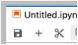
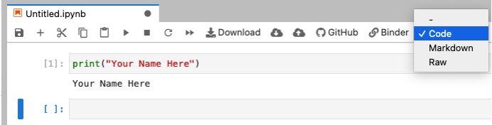
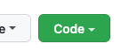
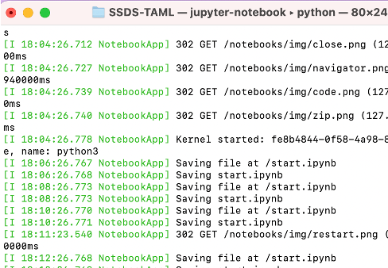

ii. Start coding!¶
Right click the “Launch Binder” button below and open it in a new browser tab.¶
Follow these instructions in JupyterLab to start a kernel, type and run a line of code, save and export your work, and end your session. The content in JupyterLab and the JupyterBook is identical.

Click “Python 3 (ipykernel)”¶
Click “Python 3 (ipykernel) under the “Notebook” header to launch a blank notebook.

Cells are code by default¶
In the first cell, type:
print(“Your Name Here”)
Run the code¶
Press shift + enter in JupyterLab or your local Python Anaconda installation to execute the code.
Insert new cells¶
Click the “plus” button to insert a new cell. It can be found between the “save disk” and “scissors” icons. 
Switch between code and text cells¶
Switch between code and text cells by clicking the dropdown menu. 
Editing a markdown cell¶
Double-click a markdown cell to edit it. Press shift + enter to render the text.
Go through the cells on this page and check out Markdown Cheatsheet to explore formatting rules and shortcuts.
Save your work¶
Click the “disk” icon to save your work. Right-click the tab to give your notebook a name:

Click “File” –> “Download” to save your Jupyter Notebook (extension
.ipynb) before exiting a Jupyter Lab session.There are many other options, take some time to explore the top menu and buttons.

Close and halt¶
Safely close the notebook by clicking “File” –> “Close and Halt” before closing your browser.

Local Python installation
Despite the many cloud-based Python Jupyter Notebook solutions, it is always good to have a local installation on your own computer. Point your web browswer here to install Python Anaconda distribution 3.9 (as of January 2022): https://www.anaconda.com/products/individual
Download the installation file for your operating system, open it, and follow the instructions to install.
Once installation completes, open the application named “Anaconda Navigator”. It looks like this:

Click the “Launch” button under either Jupyter Notebook or Jupyter Lab.
Open the
.ipynbnotebook you just downloaded from JupyterLab in your local installation and repeat the steps above.
Run these materials on your local computer¶
Copy these materials for use on your local installation.
Click the green “Code” button 
Click “Download ZIP”

Extract this folder someplace familiar such as your Desktop.
Open Anaconda Navigator, launch JupyterLab, and navigate your directories to launch these notebooks.
git clone¶
Git users type: git clone https://github.com/EastBayEv/SSDS-TAML.git
Install external libraries¶
Install user-defined software libraries to enhance Python’s functionality. In a new notebook cell type !pip install <library name>, e.g.:
!pip install pandas!pip install seaborn
Dead kernel?¶
The notebook kernel will fail from time to time, which is normal. Simply click “Kernel” from the File menu and one of the “Restart” options.

NOTE: about the terminal, you will see it run processes in the background like this:

If you accidentally delete a Jupyter Notebook …¶
Check your operating system’s Recycle Bin!